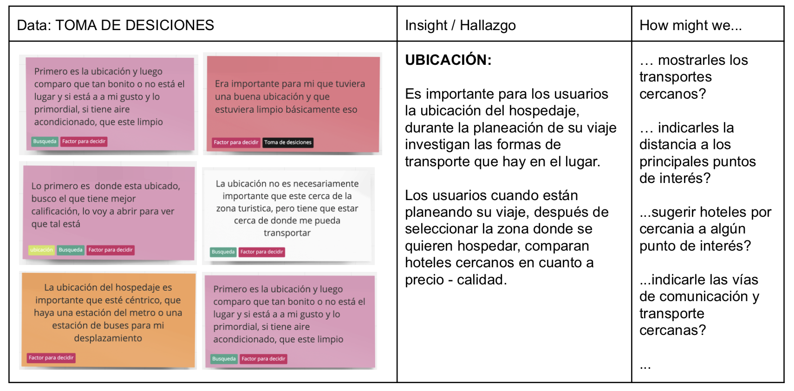
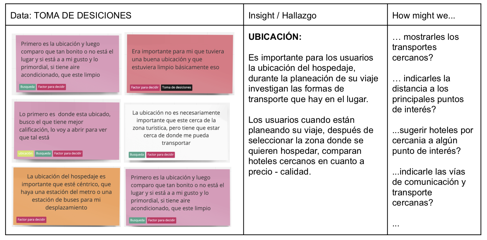

As a UX Designer for a leading OTA (Online Travel Agency) in Latam, I was tasked with conducting user research and gathering data to gain insights into the online hotel booking process and identify the pain points users encounter
Challenge
The Challenge
While our analytics data showed us what users were doing, it didn’t tell us why. We needed to go beyond the numbers to deeply understand the behavior, motivations, and frustrations of travelers as they searched for and booked accommodations online.
Goal
My Goal
My goal was to thoroughly understand the entire booking process and provide the team with data that would guide better decision-making for future features on our platform.


 
